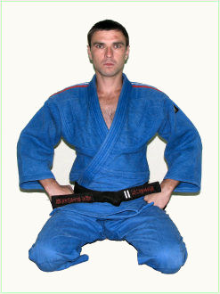

Президент Запорожской федерации Дзю-Дзюцу
Наша Федерация / Президент Запорожской федерации Дзю-ДзюцуВиталий Николаевич Дьяков
2-й дан, Президент Запорожской Федерации Дзю-Дзюцу, кандидат в мастера спорта по рукопашному бою, мастер спорта по джиу-джитсу.
Родился в 1977 г.
В 1999 г. окончил Херсонское мореходное училище по специальности судомеханик.
В 2004 г. Окончил факультет физического воспитания и спорта Запорожского государственного университета(ЗГУ) по специальности «Олимпийский и профессиональный спорт», специализация «тренер по Джиу-Джитсу».
В 2005 г. Окончил магистратуру на факультете физического воспитания и спорта Классического приватного университета(КПУ)
Единоборствами начал заниматься с 1991 г. В секции таэквондо при ЗГУ у тренеров Моххамеда Турэ (3-й дан, респ. Мали), Кулитко Николая Николаевича (Чемпион Украины, 1-й дан, мастер спорта), Чеберяка Руслана (Чемпион Украины, 1-й дан, мастер спорта). В 1995 г. Познакомился с Виталием Козаковым, с которым начал изучать Дзю-Дзюцу. В то время Виталий Козаков работал преподавателем самообороны на факультете физического воспитания ЗГУ и был призёром СССР по карате кекусинкай, неоднократным участником и победителем различных полноконтактных турниров и первый начал развивать Дзю-Дзюцу в Запорожье. К сожалению, в июне 1995 г. В.Козаков трагически погиб.
В 1998 г. Установил контакт с ассоциацией джиу-джитсу Украины.
В 2002 г. Аттестован на 1-й дан. В июне 2007 г. аттестован на 2-й дан по школе Госин-Рю Дзю-дзюцу.
Спортивная карьера:
- 1993 г. Открытый чемпионат Запорожской области по таэквондо, 3 место
- 1994 г. Открытый чемпионат Запорожской области по таэквондо, 3 место
- Апрель 2002 г. Национальный чемпионат Украины по джиу-Джитсу.
- Июнь 2002 г. Закрытый чемпионат по рукопашному бою среди работников силовых структур на призы ФСО "Динамо"
- Ноябрь 2002 г. Открытый чемпионат г. Москвы по джиу-джитсу, 5-е место
- 2002 г. Закрытый Чемпионат Запорожской области по рукопашному бою среди работников силовых структур. По результатам чемпионата включен в сборную области.
- Февраль 2003 г. Открытый кубок Запорожской области по рукопашному бою, 2-е место
- Март 2003 г. Закрытый Чемпионат Украины по рукопашному бою среди подразделений МВД.
- Март 2003 г. Национальный чемпионат Украины по джиу-Джитсу, 2-е место
- Апрель 2003 г. Открытый Международный турнир по полноконтактным поединкам Дзиссен-до, 2-е место
- Июнь 2003 г. Закрытый Чемпионат Украины по рукопашному бою среди работников силовых структур на призы ФСО «Динамо».
- Апрель 2004 г. Национальный чемпионат Украины по джиу-Джитсу, 3-е место
- Апрель 2005 г. Национальный чемпионат Украины по джиу-Джитсу, 1-е место
- Апрель 2006 г. Национальный чемпионат Украины по джиу-Джитсу
- 27 апреля - 1 мая 2006 г. 1 место, 5-й Чемпионат Украины по рукопашному бою среди работников уголовно-исполнительной системы, г. Чернигов.
- 26 -29 сентября 2006 г. 2 место, Чемпионат Украины по рукопашному бою среди работников силовых структур, г. Феодосия.
- 9 мая 2008 г. - открытый чемпионат Европы по джиу-джитсу, Бельгия, Антверпен.
- 27-28 марта 2009 г. в г. Кривой Рог, чемпионат Украины по джиу-джитсу, 1 место